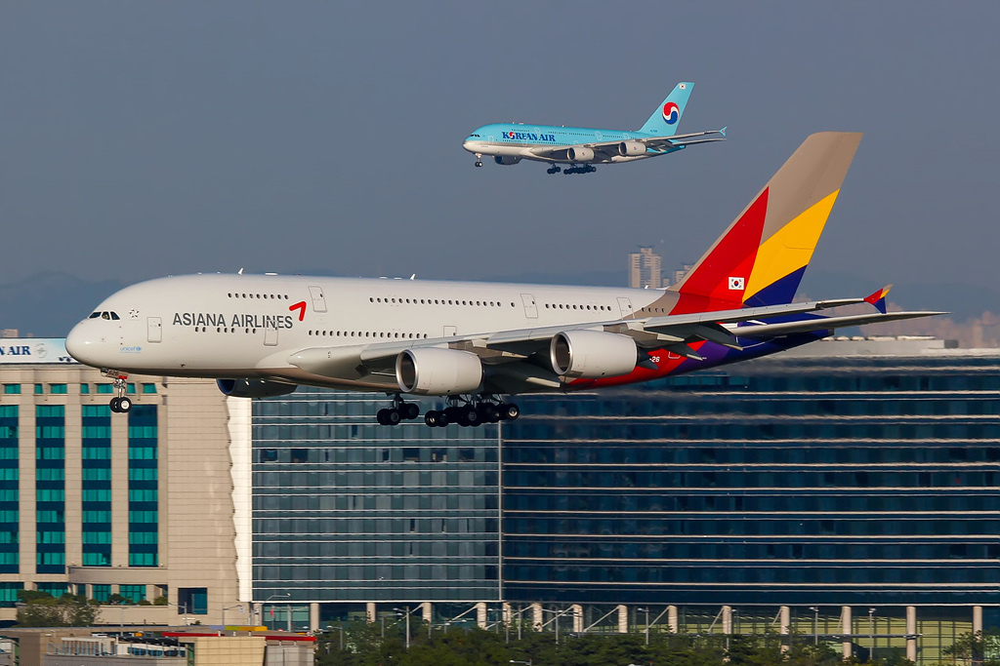

Combining Korean Air and Asiana Airlines is not simply about
putting two fleets beneath one name. Reservations, operations
control, maintenance, safety manuals, crew training, airports,
lounges, mileage and corporate culture all need a common operating
language.
Korean Air acquired 63.88% of Asiana in December 2024. The merger
contract followed in May 2026, transport-ministry approval in June
and Asiana shareholder approval in August. The current official
launch date for the integrated Korean Air is 17 December 2026.
Yet one date cannot synchronize every part of an airline. Legal
entities can merge first; aircraft, systems and cultures take much
longer to align.
Integrated launch12.17
2026
Stake acquired63.88%
Dec 2024
Merger ratio1 : 0.2736432
Korean Air : Asiana
Integration cost~₩1T
Company guidance
02 SIX YEARS IN MOTION
Six years in motion. One conclusion.
Between the acquisition announcement and the integrated launch
came competition remedies, a cargo divestiture, replacement
carriers and operational-certification work.
Acquisition announced
Korean Air resolves to acquire Asiana.
Global competition review
Authorities across major jurisdictions review passenger and
cargo competition.
Stake acquisition completed
Korean Air acquires 63.88% of Asiana.
Cargo business divested
Asiana’s freighter business is transferred as part of
regulatory remedies.
Shared Incheon T2 hub
Asiana moves all Incheon operations to Terminal 2.
Contract, approval, vote
Legal and regulatory steps move toward completion.
Integrated Korean Air planned to launch
A single-company structure begins.
03 WHAT CHANGES FOR YOU
My miles, where next?
The published proposal keeps legacy Asiana mileage separate for a
transition period before conversion to SKYPASS, subject to final
regulatory approval.
Flight-earned miles
100Asiana
→
100SKYPASS
1 : 1
Partner-earned miles
100Asiana
→
82SKYPASS
1 : 0.82

04 PEOPLE BEHIND THE MERGER
“One certificate. Trust built together.”
Joint emergency drills, shared spaces and service-experience
programs show how integration is practiced before it becomes a
brand.
Integration shows itself on the frontline before it appears in a
logo. This editorial dialogue reconstructs the perspectives of two
cabin leaders as distinct service cultures move toward one operating
standard.
KOREAN AIR PURSER
Korean Air purser
Q1 · What worries you most about integration?
My first concern is whether crews from the two organizations can
truly settle into working together. Different cultures and career
systems need honest dialogue and visibly fair rules. There is also
a practical anxiety that roles and promotion opportunities built
up within Korean Air may become a smaller pie when they are shared.
I hope transparent principles help us meet as colleagues responsible
for the same safety and service, rather than as rivals.
Q2 · What are you most looking forward to?
I would like us to learn from Asiana’s culture of caring for cabin
crew and adopt any procedures that work more effectively on the
frontline. The training environment is also improving as the merger
approaches, including the training-center renovation, which feels
like a genuine benefit for us. I look forward to the strengths of
both airlines improving both our workplace and passenger service.
ASIANA PURSER
Asiana Airlines purser
Q1 · What worries you most about integration?
I worry most about whether we will be treated as equals in the areas
that directly shape our lives and careers: personnel decisions,
seniority and pay. Learning unfamiliar aircraft and an entirely new
set of service procedures will also be demanding. If our experience
is properly recognized and enough training and adjustment time are
guaranteed, the transition will feel far more secure.
Q2 · What are you most looking forward to?
Becoming part of a larger mega-airline could open the door to more
countries and new cities, and that is exciting. I am also happy to
feel that colleagues at Korean Air are making an effort to welcome
us. If we keep reaching out to one another, the merger can create a
broader community of colleagues as well as a broader network.
“One company is a date. One team takes time.”
※ This is an editorially simulated interview, not quotations from any
identifiable real pursers. It is based on themes supplied by the user and
the publicly described context of the integration.
06 ORIGINAL REPORTING, ONE CLICK AWAY
News archive 40 perspectives.
Official newsrooms, regulators, wire services, business media and
aviation outlets in one archive. Korean source headlines and concise
summaries are preserved in their original language for fidelity.